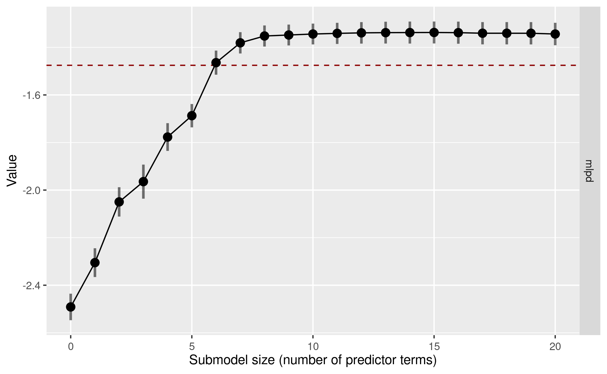
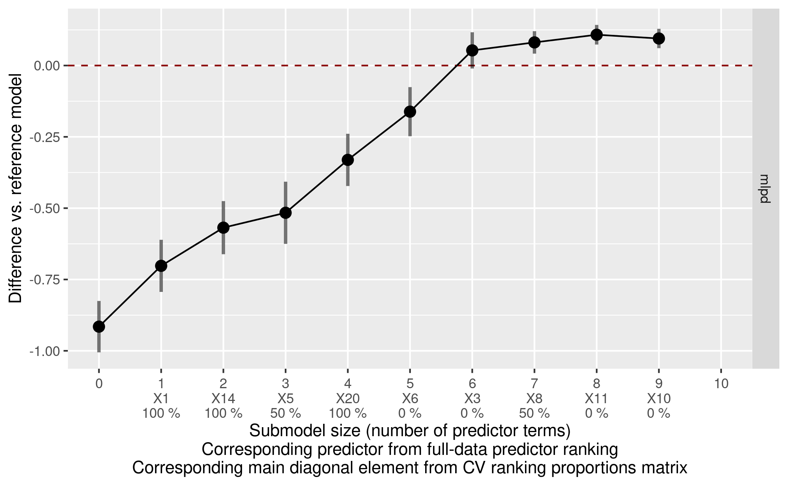
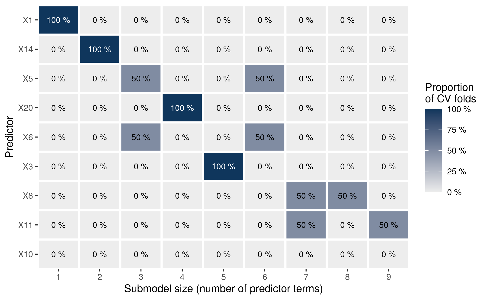
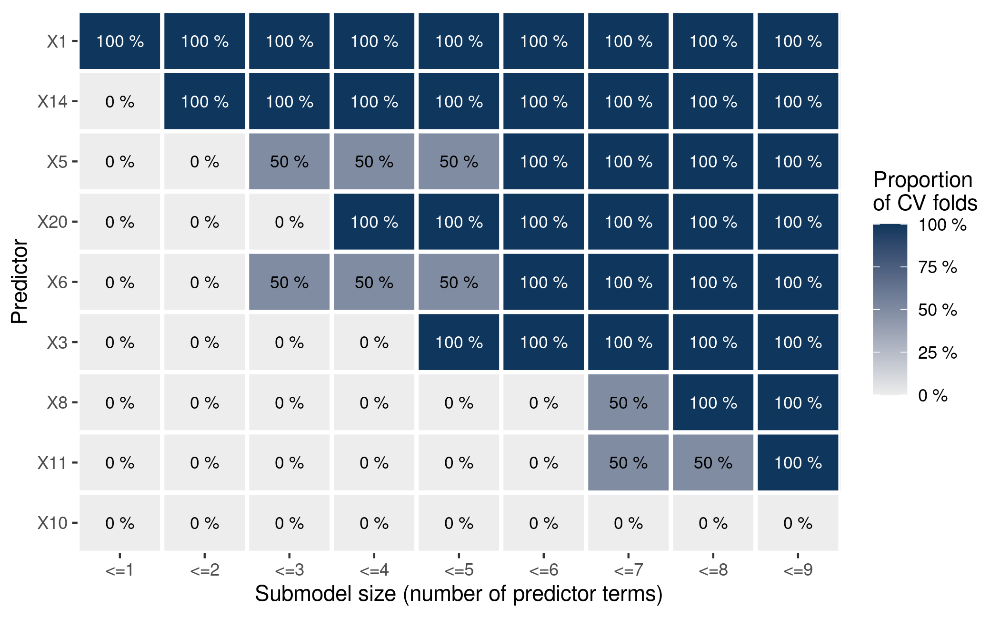
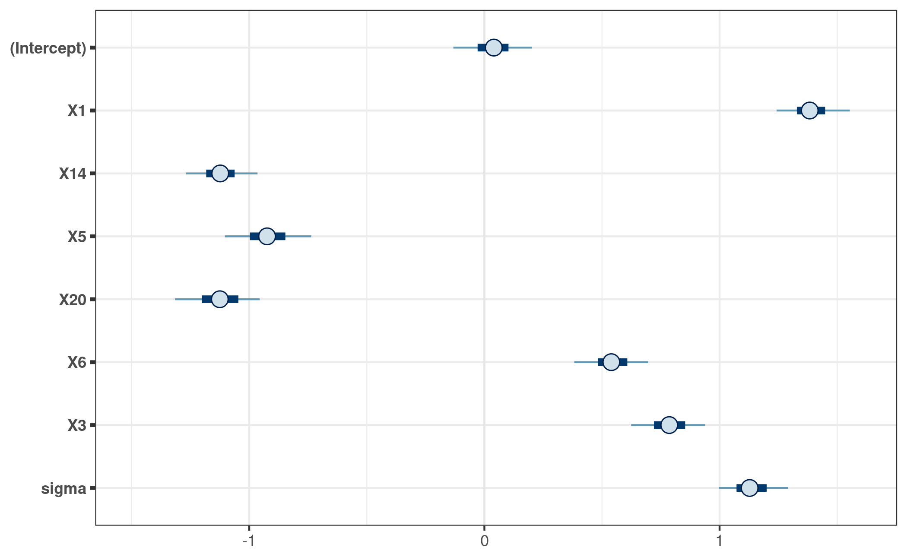
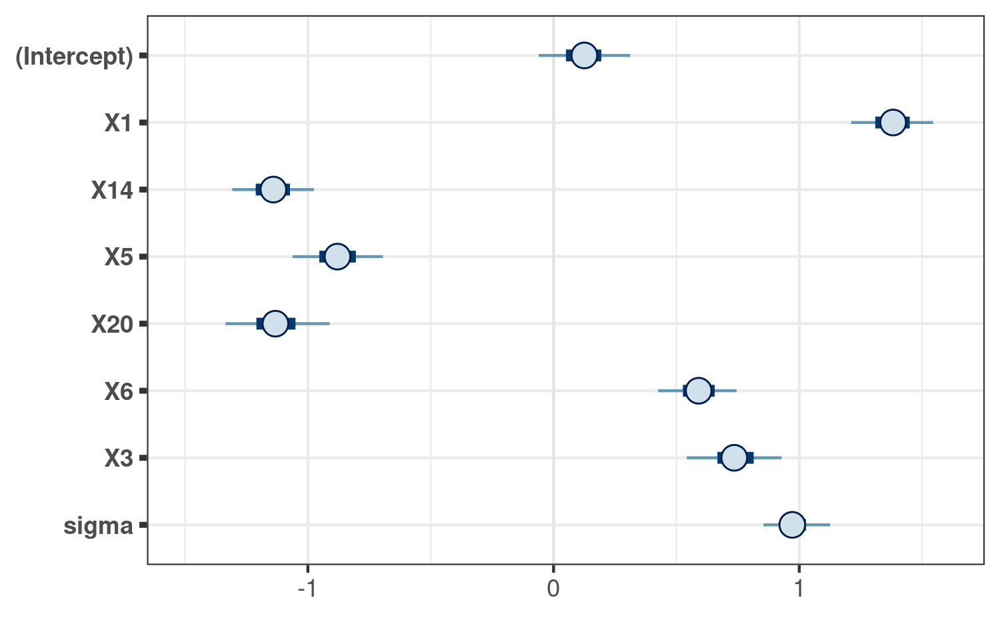
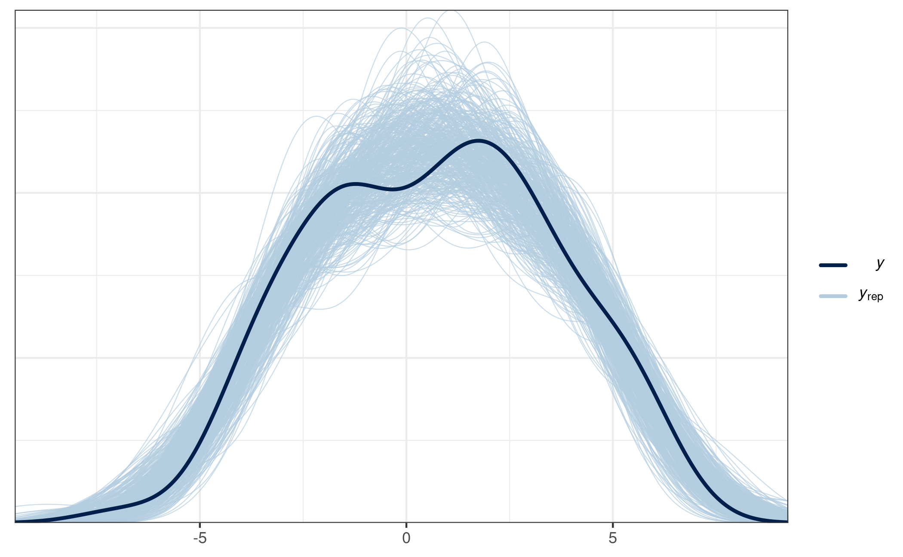

vignettes/projpred.Rmd
projpred.RmdThis vignette illustrates the main functionalities of the projpred package, which implements the projection predictive variable selection for various regression models (see section “Supported types of models” below for more details on supported model types). What is special about the projection predictive variable selection is that it not only performs a variable selection, but also allows for (approximately) valid post-selection inference.
The projection predictive variable selection is based on the ideas of Goutis and Robert (1998) and Dupuis and Robert (2003). The methods implemented in projpred are described in detail in Piironen, Paasiniemi, and Vehtari (2020), Catalina, Bürkner, and Vehtari (2022), Weber, Glass, and Vehtari (2023), and Catalina, Bürkner, and Vehtari (2021). A comparison to many other methods may also be found in Piironen and Vehtari (2017a). For details on how to cite projpred, see the projpred citation info on CRAN1.
For this vignette, we use projpred’s
df_gaussian data. It contains 100 observations of 20
continuous predictor variables X1, …, X20
(originally stored in a sub-matrix; we turn them into separate columns
below) and one continuous response variable y.
data("df_gaussian", package = "projpred")
dat_gauss <- data.frame(y = df_gaussian$y, df_gaussian$x)First, we have to construct a reference model for the projection predictive variable selection. This model is considered as the best (“reference”) solution to the prediction task. The aim of the projection predictive variable selection is to find a subset of a set of candidate predictors which is as small as possible but achieves a predictive performance as close as possible to that of the reference model.
Usually (and this is also the case in this vignette), the reference
model will be an rstanarm or brms
fit. To our knowledge, rstanarm and
brms are currently the only packages for which a
get_refmodel() method (which establishes the compatibility
with projpred) exists. Creating a reference model
object via one of these methods get_refmodel.stanreg() or
brms::get_refmodel.brmsfit() (either implicitly by a call
to a top-level function such as project(),
varsel(), and cv_varsel(), as done below, or
explicitly by a call to get_refmodel()) leads to a
“typical” reference model object. In that case, all candidate models are
actual submodels of the reference model. In general, however,
this assumption is not necessary for a projection predictive variable
selection (see, e.g., Piironen, Paasiniemi, and Vehtari
2020). This is why “custom” (i.e., non-“typical”) reference
model objects allow to avoid this assumption (although the candidate
models of a “custom” reference model object will still be actual
submodels of the full formula used by the search
procedure—which does not have to be the same as the reference model’s
formula, if the reference model possesses a
formula at all). Such “custom” reference model objects can
be constructed via init_refmodel() (or
get_refmodel.default()), as shown in section “Examples” of
the ?init_refmodel help2.
Here, we use the rstanarm package to fit the
reference model. If you want to use the brms package,
simply replace the rstanarm fit (of class
stanreg) in all the code below by your
brms fit (of class brmsfit).
For our rstanarm reference model, we use the
Gaussian distribution as the family for our response. With
respect to the predictors, we only include the linear main effects of
all 20 predictor variables. Compared to the more complex types of
reference models supported by projpred (see section “Supported types of models” below), this is a quite
simple reference model which is sufficient, however, to demonstrate the
interplay of projpred’s functions.
We use rstanarm’s default priors in our reference model, except for the regression coefficients for which we use a regularized horseshoe prior (Piironen and Vehtari 2017c) with the hyperprior for its global shrinkage parameter following Piironen and Vehtari (2017b) and Piironen and Vehtari (2017c). In R code, these are the preparation steps for the regularized horseshoe prior:
[1] 20
# Prior guess for the number of relevant (i.e., non-zero) regression
# coefficients:
p0 <- 5
# Number of observations:
N <- nrow(dat_gauss)
# Hyperprior scale for tau, the global shrinkage parameter (note that for the
# Gaussian family, 'rstanarm' will automatically scale this by the residual
# standard deviation):
tau0 <- p0 / (D - p0) * 1 / sqrt(N)We now fit the reference model to the data. To make this vignette
build faster, we use only 2 MCMC chains and 1000 iterations per chain
(with half of them being discarded as warmup draws). In practice, 4
chains and 2000 iterations per chain are reasonable defaults.
Furthermore, we make use of rstan’s
parallelization, which means to run each chain on a separate CPU core3. If you
run the following code yourself, you can either rely on an automatic
mechanism to detect the number of CPU cores (like the
parallel::detectCores() function shown below) or adapt
ncores manually to your system.
# Set this manually if desired:
ncores <- parallel::detectCores(logical = FALSE)
### Only for technical reasons in this vignette (you can omit this when running
### the code yourself):
ncores <- min(ncores, 2L)
###
options(mc.cores = ncores)
set.seed(507801)
refm_fit <- stan_glm(
y ~ X1 + X2 + X3 + X4 + X5 + X6 + X7 + X8 + X9 + X10 + X11 + X12 + X13 + X14 +
X15 + X16 + X17 + X18 + X19 + X20,
family = gaussian(),
data = dat_gauss,
prior = hs(global_scale = tau0),
### Only for the sake of speed (not recommended in general):
chains = 2, iter = 1000,
###
QR = TRUE, refresh = 0
)Warning: Bulk Effective Samples Size (ESS) is too low, indicating posterior means and medians may be unreliable.
Running the chains for more iterations may help. See
https://mc-stan.org/misc/warnings.html#bulk-essUsually, we would now have to check the convergence diagnostics (see,
e.g., ?posterior::diagnostics and
?posterior::default_convergence_measures; the bulk-ESS
warning already indicates a problem). However, due to the technical
reasons for which we reduced chains and iter,
we skip this step here (and hence ignore the bulk-ESS warning).
Now, projpred comes into play.
In projpred, the projection predictive variable selection relies on a so-called search part and a so-called evaluation part. The search part determines the predictor ranking (also known as solution path), i.e., the best submodel for each submodel size (the size is given by the number of predictor terms). The evaluation part determines the predictive performance of the increasingly complex submodels along the predictor ranking.
There are two functions for running the combination of search and
evaluation: varsel() and cv_varsel(). In
contrast to varsel(), cv_varsel() performs a
cross-validation (CV). With cv_method = "LOO" (the
default), cv_varsel() runs a Pareto-smoothed importance
sampling leave-one-out CV (PSIS-LOO CV, see Vehtari, Gelman, and Gabry 2017;
Vehtari et al. 2022). With
cv_method = "kfold", cv_varsel() runs a \(K\)-fold CV. The extent of the CV depends
on cv_varsel()’s argument validate_search: If
validate_search = TRUE (the default), the search part is
run with the training data of each CV fold separately and the evaluation
part is run with the corresponding test data of each CV fold. If
validate_search = FALSE (which is currently only available
for cv_method = "LOO"), the search is excluded from the CV
so that only a single full-data search is run. Because of its most
thorough protection against overfitting4,
cv_varsel() with validate_search = TRUE is
recommended over varsel() and cv_varsel() with
validate_search = FALSE. Nonetheless, a preliminary and
comparatively fast run of varsel() or
cv_varsel() with validate_search = FALSE can
give a rough idea of the performance of the submodels and can be used
for finding a suitable value for argument nterms_max in
subsequent runs (argument nterms_max imposes a limit on the
submodel size up to which the search is continued and is thus able to
reduce the runtime considerably).
To illustrate a preliminary cv_varsel() run with
validate_search = FALSE, we set nterms_max to
the number of predictor terms in the full model, i.e.,
nterms_max = 20. To speed up the building of the vignette
(this is not recommended in general), we choose the "L1"
search method
and set nclusters_pred to a comparatively low value of
20.
# Preliminary cv_varsel() run:
cvvs_fast <- cv_varsel(
refm_fit,
validate_search = FALSE,
### Only for the sake of speed (not recommended in general):
method = "L1",
nclusters_pred = 20,
###
nterms_max = 20,
### In interactive use, we recommend not to deactivate the verbose mode:
verbose = FALSE
###
)Warning: Some Pareto k diagnostic values are slightly high. See help('pareto-k-diagnostic') for details.Warning in warn_pareto(n07 = sum(pareto_k > 0.7), n05 = sum(0.7 >= pareto_k & :
In the calculation of the reference model's PSIS-LOO CV weights, 6 (out of 100)
Pareto k-values are in the interval (0.5, 0.7]. Moment matching (see the loo
package), mixture importance sampling (see the loo package), and `reloo`-ing
(see the brms package) are not supported by projpred. If these techniques (run
outside of projpred, i.e., for the reference model only; note that `reloo`-ing
may be computationally costly) result in a markedly different reference model
ELPD estimate than ordinary PSIS-LOO CV does, we recommend to use K-fold CV
within projpred.Warning in loo_varsel(refmodel = refmodel, method = method, nterms_max =
nterms_max, : The projected draws used for the performance evaluation have
different (i.e., nonconstant) weights, so using standard importance sampling
(SIS) instead of Pareto-smoothed importance sampling (PSIS). In general, PSIS
is recommended over SIS.In this case, we ignore the Pareto \(\hat{k}\) warnings due to the reduced
values for chains and iter in the reference
model fit. We also ignore the warning that SIS is used instead of PSIS
(this is due to nclusters_pred = 20 which we used only to
speed up the building of the vignette).
To find a suitable value for nterms_max in subsequent
cv_varsel() runs, we take a look at a plot of at least one
predictive performance statistic in dependence of the submodel size.
Here, we choose the mean log predictive density (MLPD; see the
documentation for argument stats of
summary.vsel() for details) as the only performance
statistic. Since we will be using the following plot only to determine
nterms_max for subsequent cv_varsel() runs, we
can omit the predictor ranking from the plot by setting
ranking_nterms_max to NA:
plot(cvvs_fast, stats = "mlpd", ranking_nterms_max = NA)
This plot (see ?plot.vsel for a description) shows that the
submodel MLPD does not change much after submodel size 8, so in our
final cv_varsel() run, we set nterms_max to a
value slightly higher than 8 (here: nterms_max = 9) to
ensure that we see the MLPD leveling off.
For this final cv_varsel() run, we use a \(K\)-fold CV with a small number of folds
(K = 2) to make this vignette build faster. In practice, we
recommend using either the default of cv_method = "LOO"
(with validate_search = TRUE) or a larger value for
K if this is possible in terms of computation time. We also
illustrate how projpred’s CV can be parallelized, even
though this is of little use here (we have only K = 2 folds
and the fold-wise searches and performance evaluations are quite fast,
so the parallelization overhead eats up any runtime improvements).
# For the CV parallelization (cv_varsel()'s argument `parallel`):
doParallel::registerDoParallel(ncores)
# Final cv_varsel() run:
cvvs <- cv_varsel(
refm_fit,
cv_method = "kfold",
### Only for the sake of speed (not recommended in general):
K = 2,
method = "L1",
nclusters_pred = 20,
###
nterms_max = 9,
parallel = TRUE,
### In interactive use, we recommend not to deactivate the verbose mode:
verbose = FALSE
###
)Warning: Bulk Effective Samples Size (ESS) is too low, indicating posterior means and medians may be unreliable.
Running the chains for more iterations may help. See
https://mc-stan.org/misc/warnings.html#bulk-ess
Warning: Bulk Effective Samples Size (ESS) is too low, indicating posterior means and medians may be unreliable.
Running the chains for more iterations may help. See
https://mc-stan.org/misc/warnings.html#bulk-ess
# Tear down the CV parallelization setup:
doParallel::stopImplicitCluster()
foreach::registerDoSEQ()Again, we ignore the bulk-ESS warnings due to the reduced values for
chains and iter in the reference model
fit.
We can now select a final submodel size by looking at a predictive
performance plot similar to the one created for the preliminary
cv_varsel() run above. By default, the performance
statistics are plotted on their original scale, but with
deltas = TRUE, they are plotted as differences from a
baseline model (which is the reference model by default, at least in the
most common cases). Since the differences and the (frequentist)
uncertainty in their estimation are usually of more interest than the
original-scale performance statistics (at least with regard to the
decision for a final submodel size), we directly plot with
deltas = TRUE here:
plot(cvvs, stats = "mlpd", deltas = TRUE)
Based on that plot, we decide for a submodel size. Usually, the aim is to find the smallest submodel size where the predictive performance of the submodels levels off and is close enough to the reference model’s predictive performance (the dashed red horizontal line). Sometimes (as here), the plot may be ambiguous because after reaching the reference model’s performance, the submodels’ performance may keep increasing (and hence become even better than the reference model’s performance5). In that case, one has to find a suitable trade-off between predictive performance (accuracy) and model size (sparsity) in the context of subject-matter knowledge. Here, we assume that the focus of our predictive model is sparsity (not accuracy). Hence, based on the plot, we decide for a submodel size of 6 because this is the smallest size where the submodel MLPD is close enough to the reference model MLPD:
size_decided <- 6If the focus of our predictive model had been accuracy (not sparsity), size 8 would have been a natural choice because at size 8, the submodel MLPD “levels off” (in fact, size 8 here even comes with the maximum submodel MLPD among all plotted sizes, but in general, this does not need to be the case). Further below, the predictor ranking and the (CV) ranking proportions that are shown in the plot (below the submodel sizes on the x-axis) are explained in detail—and also how they could have been incorporated into our decision for a submodel size.
The suggest_size() function offered by
projpred may help in the decision for a submodel size,
but this is a rather heuristic method and needs to be interpreted with
caution (see ?suggest_size):
suggest_size(cvvs, stat = "mlpd")[1] 6With this heuristic, we would get the same final submodel size
(6) as by our manual (sparsity-based) decision.
A tabular representation of the plot created by
plot.vsel() can be achieved via
summary.vsel(). For the output of
summary.vsel(), there is a sophisticated
print() method (print.vselsummary()) which is
also called by the shortcut method print.vsel()6.
Specifically, to create the summary table matching the predictive
performance plot above as closely as possible (and to also adjust the
minimum number of printed significant digits), we may call
summary.vsel() and print.vselsummary() as
follows:
smmry <- summary(cvvs, stats = "mlpd", type = c("mean", "lower", "upper"),
deltas = TRUE)
print(smmry, digits = 1)
Family: gaussian
Link function: identity
Formula: y ~ X1 + X2 + X3 + X4 + X5 + X6 + X7 + X8 + X9 + X10 + X11 +
X12 + X13 + X14 + X15 + X16 + X17 + X18 + X19 + X20
Observations: 100
Projection method: traditional
CV method: K-fold CV with K = 2 and search included (i.e., fold-wise searches)
Search method: L1
Maximum submodel size for the search: 9
Number of projected draws in the search: 1 (from clustered projection)
Number of projected draws in the performance evaluation: 20 (from clustered projection)
Performance evaluation summary with `deltas = TRUE` and `cumulate = FALSE`:
size solution_terms cv_proportions_diag mlpd.kfold lower upper
0 <NA> NA -0.92 -1.01 -0.83
1 X1 1.0 -0.70 -0.79 -0.61
2 X14 1.0 -0.57 -0.66 -0.48
3 X5 0.5 -0.52 -0.63 -0.41
4 X20 1.0 -0.33 -0.42 -0.24
5 X6 0.0 -0.16 -0.25 -0.08
6 X3 0.0 0.05 -0.01 0.12
7 X8 0.5 0.08 0.04 0.12
8 X11 0.0 0.11 0.07 0.14
9 X10 0.0 0.09 0.06 0.13Column `solution_terms` contains the full-data predictor ranking. To retrieve the fold-wise predictor rankings, use the ranking() function, possibly followed by cv_proportions() for computing the ranking proportions (which can be visualized by plot.cv_proportions()). The main diagonal of the matrix returned by cv_proportions() (with `cumulate = FALSE`) is contained in column `cv_proportions_diag`.As highlighted by the message above, the predictor ranking from
column solution_terms is based on the full-data search. In
case of cv_varsel() with
validate_search = TRUE, there is not only the full-data
search, but also fold-wise searches, implying that there are also
fold-wise predictor rankings. All of these predictor rankings (the
full-data one and—if available—the fold-wise ones) can be retrieved via
ranking():
rk <- ranking(cvvs)In addition to inspecting the full-data predictor ranking, it usually
makes sense to investigate the ranking proportions derived from the
fold-wise predictor rankings (only available in case of
cv_varsel() with validate_search = TRUE, which
we have here) in order to get a sense for the variability in the ranking
of the predictors. For a given predictor \(x\) and a given submodel size \(j\), the ranking proportion is the
proportion of CV folds which have predictor \(x\) at position \(j\) of their predictor ranking. To compute
these ranking proportions, we use cv_proportions():
( pr_rk <- cv_proportions(rk) ) predictor
size X1 X14 X5 X20 X6 X3 X8 X11 X10
1 1 0 0.0 0 0.0 0 0.0 0.0 0
2 0 1 0.0 0 0.0 0 0.0 0.0 0
3 0 0 0.5 0 0.5 0 0.0 0.0 0
4 0 0 0.0 1 0.0 0 0.0 0.0 0
5 0 0 0.0 0 0.0 1 0.0 0.0 0
6 0 0 0.5 0 0.5 0 0.0 0.0 0
7 0 0 0.0 0 0.0 0 0.5 0.5 0
8 0 0 0.0 0 0.0 0 0.5 0.0 0
9 0 0 0.0 0 0.0 0 0.0 0.5 0
attr(,"class")
[1] "cv_proportions"Here, the ranking proportions are of little use as we have used
K = 2 (in the final cv_varsel() call above)
for the sake of speed. Nevertheless, we can see that the two CV folds
agree on the set of the two most relevant predictor terms
(X1 and X14) as well as on their order. Since
the column names of the matrix returned by cv_proportions()
follow the full-data predictor ranking, we can infer that
X1 and X14 are also the two most relevant
predictor terms in the full-data predictor ranking. To see this more
explicitly, we can access element fulldata of the
ranking() output:
rk[["fulldata"]][1] "X1" "X14" "X5" "X20" "X6" "X3" "X8" "X11" "X10"This is the same as column solution_terms in the
summary.vsel() output above. (As also stated by the message
thrown by print.vselsummary(), column
cv_proportions_diag of the summary.vsel()
output contains the main diagonal of the matrix that we stored manually
as pr_rk.)
Note that we have cut off the search at nterms_max = 9
(which is smaller than the number of predictor terms in the full model,
20 here), so the ranking proportions in the pr_rk matrix do
not need to sum to 100 % (neither column-wise nor row-wise).
The transposed matrix of ranking proportions can be
visualized via plot.cv_proportions():
plot(pr_rk)
Apart from visualizing the variability in the ranking of the predictors
(here, this is of little use because of K = 2), this plot
will be helpful later.
To retrieve the predictor terms of the final submodel (except for the intercept which is always included in the submodels), we combine the chosen submodel size of 6 with the full-data predictor ranking:
( predictors_final <- head(rk[["fulldata"]], size_decided) )[1] "X1" "X14" "X5" "X20" "X6" "X3" At this place, it is again helpful to take the ranking proportions into account, but now in a cumulated fashion:
plot(cv_proportions(rk, cumulate = TRUE))
This plot confirms (from a slightly different perspective) that the two
fold-wise searches (as well as the full-data search, whose predictor
ranking determines the order of the predictors on the y-axis) agree on
the set of the two most relevant predictors (X1
and X14): When looking at <=2 on the
x-axis, all tiles above and including the second main diagonal element
are at 100 %. Similarly, the two CV folds agree on the sets of
the six and nine most relevant predictors (and also on the set of the
most relevant predictor, which is a singleton).
Although not demonstrated here, the cumulated ranking proportions
could also have guided the decision for a submodel size (if we had not
been willing to follow a strict rule based on accuracy or sparsity):
From their plot, we can see that size 9 might have been an unfortunate
choice because X10 (which—by cutting off the full-data
predictor ranking at size 9—would then have been selected as the ninth
predictor in the final submodel) is not included among the first 9 terms
by any CV fold. However, since K = 2 is too small for
reliable statements regarding the variability of the predictor ranking,
we did not take the cumulated ranking proportions into account when we
made our decision for a submodel size above.
In a real-world application, we might also be able to incorporate the full-data predictor ranking into our decision for a submodel size (usually, this requires to also take into account the variability of the predictor ranking, as reflected by the—possibly cumulated—ranking proportions). For example, the predictors might be associated with different measurement costs, so that we might want to select a costly predictor only if the submodel size at which it would be selected (according to the full-data predictor ranking, but taking into account that there might be variability in the ranking of the predictors) comes with a considerable increase in predictive performance.
The project() function returns an object of class
projection which forms the basis for convenient
post-selection inference. By the following project() call,
we project the reference model onto the final submodel once again7:
prj <- project(
refm_fit,
solution_terms = predictors_final,
### In interactive use, we recommend not to deactivate the verbose mode:
verbose = FALSE
###
)Next, we create a matrix containing the projected posterior draws
stored in the depths of project()’s output:
prj_mat <- as.matrix(prj)This matrix is all we need for post-selection inference. It can be
used like any matrix of draws from MCMC procedures, except that it
doesn’t reflect a typical posterior distribution, but rather a projected
posterior distribution, i.e., the distribution arising from the
deterministic projection of the reference model’s posterior distribution
onto the parameter space of the final submodel8. Beware that in case
of clustered projection (i.e., a non-NULL argument
nclusters in the project() call), the
projected draws have different (i.e., nonconstant) weights, which needs
to be taken into account when performing post-selection (or, more
generally, post-projection) inference, see
as_draws_matrix.projection() (proj_linpred()
and proj_predict() offer similar functionality via
arguments return_draws_matrix and
nresample_clusters, respectively9).
The posterior package provides a general way to deal with posterior distributions, so it can also be applied to our projected posterior. For example, to calculate summary statistics for the marginals of the projected posterior:
prj_drws <- as_draws_matrix(prj_mat)
prj_smmry <- summarize_draws(
prj_drws,
"median", "mad", function(x) quantile(x, probs = c(0.025, 0.975))
)
# Coerce to a `data.frame` because pkgdown versions > 1.6.1 don't print the
# tibble correctly:
prj_smmry <- as.data.frame(prj_smmry)
print(prj_smmry, digits = 1) variable median mad 2.5% 97.5%
1 (Intercept) 0.03 0.09 -0.2 0.2
2 X1 1.38 0.10 1.2 1.6
3 X14 -1.12 0.09 -1.3 -0.9
4 X5 -0.92 0.10 -1.1 -0.7
5 X20 -1.12 0.11 -1.4 -0.9
6 X6 0.54 0.09 0.4 0.7
7 X3 0.78 0.10 0.6 1.0
8 sigma 1.14 0.08 1.0 1.3A visualization of the projected posterior can be achieved with the
bayesplot
package, for example using its mcmc_intervals()
function:
bayesplot_theme_set(ggplot2::theme_bw())
mcmc_intervals(prj_mat) +
ggplot2::coord_cartesian(xlim = c(-1.5, 1.6))
Note that we only visualize the 1-dimensional marginals of the projected posterior here. To gain a more complete picture, we would have to visualize at least some 2-dimensional marginals of the projected posterior (i.e., marginals for pairs of parameters).
For comparison, consider the marginal posteriors of the corresponding parameters in the reference model:
refm_mat <- as.matrix(refm_fit)
mcmc_intervals(refm_mat, pars = colnames(prj_mat)) +
ggplot2::coord_cartesian(xlim = c(-1.5, 1.6))
Here, the reference model’s marginal posteriors differ only slightly from the marginals of the projected posterior. This does not necessarily have to be the case.
Predictions from the final submodel can be made by
proj_linpred() and proj_predict().
We start with proj_linpred(). For example, suppose we
have the following new observations:
( dat_gauss_new <- setNames(
as.data.frame(replicate(length(predictors_final), c(-1, 0, 1))),
predictors_final
) ) X1 X14 X5 X20 X6 X3
1 -1 -1 -1 -1 -1 -1
2 0 0 0 0 0 0
3 1 1 1 1 1 1Then proj_linpred() can calculate the linear
predictors10 for all new observations from
dat_gauss_new. Depending on argument
integrated, these linear predictors can be averaged across
the projected draws (within each new observation). For instance, the
following computes the expected values of the new observations’
predictive distributions (beware that the following code refers to the
Gaussian family with the identity link function; for other
families—which usually come in combination with a different link
function—one would typically have to use transform = TRUE
in order to achieve such expected values):
prj_linpred <- proj_linpred(prj, newdata = dat_gauss_new, integrated = TRUE)
cbind(dat_gauss_new, linpred = as.vector(prj_linpred$pred)) X1 X14 X5 X20 X6 X3 linpred
1 -1 -1 -1 -1 -1 -1 0.49546584
2 0 0 0 0 0 0 0.04249252
3 1 1 1 1 1 1 -0.41048080If dat_gauss_new also contained response values (i.e.,
y values in this example), then proj_linpred()
would also evaluate the log predictive density at these (conditional on
each of the projected parameter draws if integrated = FALSE
and integrated over the projected parameter draws—before taking the
logarithm—if integrated = TRUE).
With proj_predict(), we can obtain draws from predictive
distributions based on the final submodel. In contrast to
proj_linpred(<...>, integrated = FALSE), this
encompasses not only the uncertainty arising from parameter estimation,
but also the uncertainty arising from the observation (or “sampling”)
model for the response11. This is useful for what is usually
termed a posterior predictive check (PPC), but would have to be termed
something like a posterior-projection predictive check (PPPC) here:
prj_predict <- proj_predict(prj)
# Using the 'bayesplot' package:
ppc_dens_overlay(y = dat_gauss$y, yrep = prj_predict)
This PPPC shows that our final projection is able to generate predictions similar to the observed response values, which indicates that this model is reasonable, at least in this regard.
In principle, the projection predictive variable selection requires only little information about the form of the reference model. Although many aspects of the reference model coincide with those from the submodels if a “typical” reference model object is used, this does not need to be the case if a “custom” reference model object is used (see section “Reference model” above for the definition of “typical” and “custom” reference model objects). This explains why in general, the following remarks refer to the submodels and not to the reference model.
In the following and throughout projpred’s documentation, the term “traditional projection” is used whenever the projection type is neither “augmented-data” nor “latent” (see below for a description of these).
Apart from the gaussian() response family used in this
vignette, projpred’s traditional projection also
supports the binomial()12 and the poisson()
family.
The families supported by projpred’s augmented-data
projection (Weber, Glass, and Vehtari
2023) are binomial()13 14,
brms::cumulative(), rstanarm::stan_polr()
fits, and brms::categorical()15 16. See
?extend_family (which is called by
init_refmodel()) for an explanation how to apply the
augmented-data projection to “custom” reference model objects. For
“typical” reference model objects (i.e., those created by
get_refmodel.stanreg() or
brms::get_refmodel.brmsfit()), the augmented-data
projection is applied automatically if the family is supported by the
augmented-data projection and neither binomial() nor
brms::bernoulli(). For applying the augmented-data
projection to the binomial() (or
brms::bernoulli()) family, see ?extend_family
as well as ?augdat_link_binom and
?augdat_ilink_binom. Finally, we note that there are some
restrictions with respect to the augmented-data projection;
projpred will throw an informative error if a requested
feature is currently not supported for the augmented-data
projection.
The latent projection (Catalina, Bürkner, and Vehtari
2021) is a quite general principle for extending
projpred’s traditional projection to more response
families. The latent projection is applied when setting argument
latent of extend_family() (which is called by
init_refmodel()) to TRUE. The families for
which full latent-projection functionality (in particular,
resp_oscale = TRUE, i.e., post-processing on the original
response scale) is currently available are binomial()17 18,
poisson(), brms::cumulative(), and
rstanarm::stan_polr() fits19. For all other
families, you can try to use the latent projection (by setting
latent = TRUE) and projpred should tell
you if any features are not available and how to make them available.
More details concerning the latent projection are given in the
corresponding latent-projection
vignette. Note that there are some restrictions with respect to the
latent projection; projpred will throw an informative
error if a requested feature is currently not supported for the latent
projection.
On the side of the predictors, projpred not only supports linear main effects as shown in this vignette, but also interactions, multilevel20, and—as an experimental feature—additive21 terms.
Transferring this vignette to such more complex problems is straightforward (also because this vignette employs a “typical” reference model object): Basically, only the code for fitting the reference model via rstanarm or brms needs to be adapted. The projpred code stays almost the same. Only note that in case of multilevel or additive reference models, some projpred functions then have slightly different options for a few arguments. See the documentation for details.
For example, to apply projpred to the
VerbAgg dataset from the lme4
package, a corresponding multilevel reference model for the binary
response r2 could be created by the following code:
data("VerbAgg", package = "lme4")
refm_fit <- stan_glmer(
r2 ~ btype + situ + mode + (btype + situ + mode | id),
family = binomial(),
data = VerbAgg,
QR = TRUE, refresh = 0
)As an example for an additive (non-multilevel) reference model,
consider the lasrosas.corn dataset from the agridat
package. A corresponding reference model for the continuous response
yield could be created by the following code (note that
pp_check(refm_fit) gives a bad PPC in this case, so there’s
still room for improvement):
data("lasrosas.corn", package = "agridat")
# Convert `year` to a `factor` (this could also be solved by using
# `factor(year)` in the formula, but we avoid that here to put more emphasis on
# the demonstration of the smooth term):
lasrosas.corn$year <- as.factor(lasrosas.corn$year)
refm_fit <- stan_gamm4(
yield ~ year + topo + t2(nitro, bv),
family = gaussian(),
data = lasrosas.corn,
QR = TRUE, refresh = 0
)As an example for an additive multilevel reference model, consider
the gumpertz.pepper dataset from the
agridat package. A corresponding reference model for
the binary response disease could be created by the
following code:
data("gumpertz.pepper", package = "agridat")
refm_fit <- stan_gamm4(
disease ~ field + leaf + s(water),
random = ~ (1 | row) + (1 | quadrat),
family = binomial(),
data = gumpertz.pepper,
QR = TRUE, refresh = 0
)In case of multilevel models (currently only non-additive ones),
projpred has two global options that may be relevant
for users: projpred.mlvl_pred_new and
projpred.mlvl_proj_ref_new. These are explained in detail
in the general package documentation (available online
or by typing ?`projpred-package`).
Sometimes, the predictor ranking makes sense, but for an increasing submodel size, the predictive performance of the submodels does not approach the reference model’s predictive performance so that the submodels exhibit a predictive performance that stays worse than the reference model’s. There are different reasons that can explain this behavior (the following list might not be exhaustive, though):
ndraws_pred could be too small. Usually, this comes in
combination with a difference in predictive performance which is
comparatively small. Increasing ndraws_pred should help,
but it also increases the computational cost. Re-fitting the reference
model and thereby ensuring a narrower posterior (usually by employing a
stronger sparsifying prior) should have a similar effect.If you are using varsel(), then the lack of CV in
varsel() may lead to overconfident and overfitted results.
In this case, try running cv_varsel() instead of
varsel() (which you should in any case for your final
results).
Similarly, cv_varsel() with
validate_search = FALSE is more prone to overfitting than
cv_varsel() with validate_search = TRUE.
For multilevel binomial models, the traditional projection may not work properly and give suboptimal results, see #353 on GitHub (the underlying issue is described in lme4 issue #682). With suboptimality of the results, we mean that in such cases, the relevance of the group-level terms can be underestimated. According to the simulation-based case study from #353, the latent projection should be considered as a currently available remedy.
For multilevel Poisson models, the traditional projection may take very long, see #353. According to the simulation-based case study from #353, the latent projection should be considered as a currently available remedy.
Finally, as illustrated in the Poisson example of the latent-projection vignette, the latent projection can be beneficial for non-multilevel models with a (non-Gaussian) family that is also supported by the traditional projection, at least in case of the Poisson family and L1 search.
For multilevel models, the augmented-data projection seems to suffer from the same issue as the traditional projection for the binomial family (see above), i.e., it may not work properly and give suboptimal results, see #353 (the underlying issue is probably similar to the one described in lme4 issue #682). With suboptimality of the results, we mean that in such cases, the relevance of the group-level terms can be underestimated. According to the simulation-based case study from #353, the latent projection should be considered as a remedy in such cases.
There are many ways to speed up projpred, but in general, such speed-ups lead to results that are less accurate and hence should only be considered as preliminary results. Some speed-up possibilities are:
Using cv_varsel() with
validate_search = FALSE (which requires
cv_method = "LOO") instead of
validate_search = TRUE. This approach
(cv_varsel() with validate_search = FALSE) has
comparable runtime to varsel(), but accounts for some
overfitting, namely that induced by varsel()’s in-sample
predictions during the predictive performance evaluation. However, as
explained in section “Variable
selection” (see also section “Overfitting”), cv_varsel() with
validate_search = FALSE is more prone to overfitting than
cv_varsel() with
validate_search = TRUE.
Using cv_varsel() with \(K\)-fold CV instead of PSIS-LOO CV (with
validate_search = TRUE). Whether this provides a speed
improvement mainly depends on the number of observations and the
complexity of the reference model. Note that PSIS-LOO CV is often more
accurate than \(K\)-fold CV if argument
K is (much) smaller than the number of
observations.
Using a “custom” reference model object with a dimension reduction technique for the predictor data (e.g., by computing principal components from the original predictors, using these principal components as predictors when fitting the reference model, and then performing the variable selection in terms of the original predictor terms). Examples are given in Piironen, Paasiniemi, and Vehtari (2020) and Pavone et al. (2022). This approach makes sense if there is a large number of predictor variables, in which case this aims at improving the runtime required for fitting the reference model and hence improving the runtime of \(K\)-fold CV.
Using varsel() with its argument d_test
for evaluating predictive performance on a hold-out dataset instead of
doing this with cv_varsel()’s CV approach. Typically, the
hold-out approach requires a large amount of data.
Reducing nterms_max in varsel() or
cv_varsel(). The resulting predictive performance plot(s)
should be inspected to check that the search is not terminated too early
(i.e., before the submodel performance levels off), which would indicate
that nterms_max has been reduced too much.
Reducing argument nclusters (of
varsel() or cv_varsel()) below 20
and/or setting nclusters_pred to some non-NULL
(and smaller than 400, the default for
ndraws_pred) value. If setting nclusters_pred
as low as nclusters (and using forward search),
refit_prj can instead be set to FALSE, see
below.
Using L1 search (see argument method of
varsel() or cv_varsel()) instead of forward
search. Note that L1 search implies nclusters = 1 and is
not always supported. In general, forward search is more accurate than
L1 search and hence more desirable (see section “Details” in
?varsel or ?cv_varsel for a more detailed
comparison of the two). The issue demonstrated in the Poisson example
from the latent-projection vignette is related to this.
Setting argument refit_prj (of varsel()
or cv_varsel()) to FALSE, which basically
means to set ndraws_pred = ndraws and
nclusters_pred = nclusters, but in a more efficient (i.e.,
faster) way. In case of L1 search, this means that the L1-penalized
projections of the regression coefficients are used for the predictive
performance evaluation, which may be undesired (Piironen,
Paasiniemi, and Vehtari 2020, sec. 4). In case of forward
search, this issue does not exist.
Parallelizing costly parts of the CV implied by
cv_varsel() (this was demonstrated in the example above;
see argument parallel of cv_varsel()). When
using project(), parallelizing the projection might also
help (see the general package documentation available online
or by typing ?`projpred-package`).
Using run_cvfun() in case of repeated \(K\)-fold CV with the same \(K\) reference model refits. The output of
run_cvfun() is typically used as input for argument
cvfits of cv_varsel.refmodel() (so in order to
have a speed improvement, the output of run_cvfun() needs
to be assigned to an object which is then re-used in multiple
cv_varsel() calls).
The citation information can be accessed offline by
typing print(citation("projpred"), bibtex = TRUE) within
R.↩︎
We will cover custom reference models more deeply in a future vignette.↩︎
More generally, the number of chains is split up as evenly as possible among the number of CPU cores.↩︎
Currently, neither varsel() nor
cv_varsel() (not even cv_varsel() with
validate_search = TRUE) guard against overfitting in the
selection of the submodel size. This is why we added
“approximately” to “valid post-selection inference” in section “Introduction”. Typically, however, the overfitting
induced by the size selection should be comparatively small (Piironen and
Vehtari 2017a).↩︎
In general, only cv_varsel() with
validate_search = TRUE (which we have here) allows to judge
whether the submodels perform better than the reference model or not.
Such a judgment is not possible with varsel() or
cv_varsel() with validate_search = FALSE (in
general).↩︎
print.vsel() is the method that is called
when simply printing an object resulting from varsel() or
cv_varsel().↩︎
During the search, the reference model is projected onto
all candidate models (this is where arguments ndraws and
nclusters of varsel() and
cv_varsel() come into play; note that in case of an L1
search, the projection is L1-penalized). For the evaluation of the
submodels along the predictor ranking returned by the search, the
reference model is projected onto these submodels again (this is where
arguments ndraws_pred and nclusters_pred of
varsel() and cv_varsel() come into play; note
that this only holds if argument refit_prj of
varsel() and cv_varsel() is set to
TRUE, as by default). Within project(),
refit_prj = FALSE allows to re-use the submodel fits (that
is, the projections) from the full-data search of a vsel
object, but usually, the search relies on a rather coarse clustering or
thinning of the reference model’s posterior draws (by default,
varsel() and cv_varsel() use
nclusters = 20—or nclusters = 1 in case of L1
search), which would then imply the same coarseness for a
project() call where refit_prj is set to
FALSE. In general, we want the final projection (that
post-selection inference is based on) to be as accurate as possible, so
here we call project() with the defaults of
refit_prj = TRUE and ndraws = 400. For more
accurate results, we could increase argument ndraws of
project() (up to the number of posterior draws in the
reference model). However, this would increase the runtime, which we
don’t want in this vignette.↩︎
In general, this implies that projected regression coefficients do not reflect isolated effects of the predictors. For example, especially in case of highly correlated predictors, it is possible that projected regression coefficients “absorb” effects from predictors that have been excluded in the projection.↩︎
proj_predict() also has an argument
return_draws_matrix, but it simply converts the return
value type. In proj_predict(), different weights of the
projected draws are taken into account via argument
nresample_clusters.↩︎
proj_linpred() can also transform the
linear predictor to response scale, but here, this is the same as the
linear predictor scale (because of the identity link function).↩︎
In case of the Gaussian family we are using here, the uncertainty arising from the observation model is the uncertainty due to the residual standard deviation.↩︎
Via brms::get_refmodel.brmsfit(), the
brms::bernoulli() family is supported as well.↩︎
Currently, the augmented-data support for the
binomial() family does not include binomial distributions
with more than one trial. In such a case, a workaround is to
de-aggregate the Bernoulli trials which belong to the same (aggregated)
observation, i.e., to use a “long” dataset.↩︎
Like the traditional projection, the augmented-data
projection also supports the brms::bernoulli() family via
brms::get_refmodel.brmsfit().↩︎
For the augmented-data projection based on a “typical” brms reference model object, brms version 2.17.0 or later is needed.↩︎
More brms families might be supported in the future.↩︎
Currently, the latent-projection support for the
binomial() family does not include binomial distributions
with more than one trial. In such a case, a workaround is to
de-aggregate the Bernoulli trials which belong to the same (aggregated)
observation, i.e., to use a “long” dataset.↩︎
Like the traditional projection, the latent projection
also supports the brms::bernoulli() family via
brms::get_refmodel.brmsfit().↩︎
For the latent projection based on a “typical” brms reference model object, brms version 2.19.0 or later is needed.↩︎
Multilevel models are also known as hierarchical models or models with partially pooled, group-level, or—in frequentist terms—random effects.↩︎
Additive terms are also known as smooth terms.↩︎